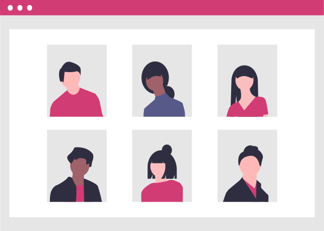

<div id="pag-about-background">
  <div id="pag-about">
 
    <h1> O Codando </h1>

    <div class="grid-about align-left-to-right align-middle">
      <p> O Codando é uma comunidade de TI criada por veteranxs que fazem parte de algum curso de tecnologia de uma das universidades: São Judas, Unimonte, UNA, UniBH, Unisul, UniCuritiba e UniSociesc. <br> <br> <br> O projeto tem como intuito ajudar os calourxs, veteranxs e entusiastas a se adaptarem com os estudos e se conectarem com a área de TI. <br> <br> <br> Acreditamos que não importa o nível de conhecimento, todos temos algo para contribuir e nós queremos conhecer o que cada um tem de melhor!</p>
      
      
    </div>

  </div>
</div>